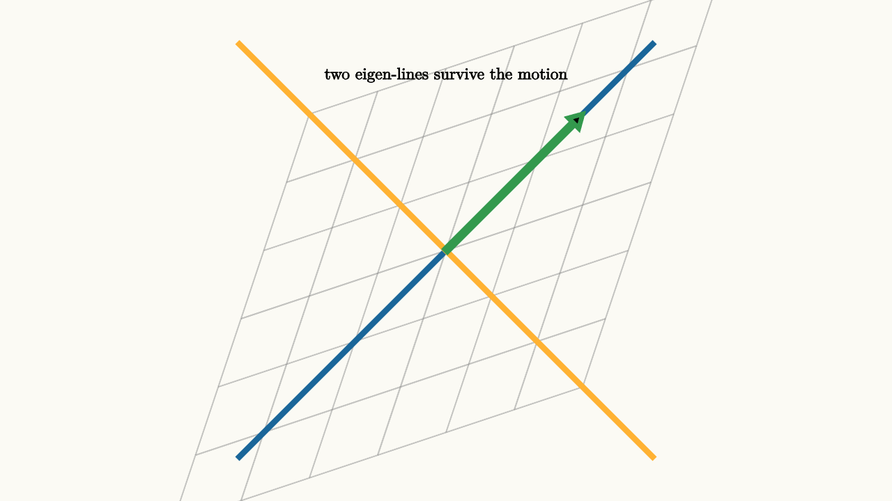

Eigenvectors Are Lines That Keep Their Name
A matrix moves every vector in space. Most vectors change direction as they move. A few special directions keep their line. Those directions are eigenvectors.
The equation is
The matrix $A$ acts on the vector $v$, and the result is a scalar multiple of the same vector. The number $\lambda$ is the eigenvalue. It tells how much the vector stretches, shrinks, or reverses.
The word "same" should be read as "same line through the origin." If $\lambda=2$, the vector doubles. If $\lambda=\frac12$, it shrinks. If $\lambda=-1$, it flips to the opposite direction along the same line. In all three cases, the line itself keeps its name.

source
background = [0.985, 0.98, 0.955, 1]
camera = Camera(4.7b)
let A = |p| [1.35 * p[0] + 0.45 * p[1], 0.45 * p[0] + 1.35 * p[1], 0]
let TransformGrid = || block {
for (x in sample(-1.6, 1.6, 7)) {
. stroke{alpha{0.45} GRAY, 1.2} Line(start: A([x, -1.6, 0]), end: A([x, 1.6, 0]))
}
for (y in sample(-1.6, 1.6, 7)) {
. stroke{alpha{0.45} GRAY, 1.2} Line(start: A([-1.6, y, 0]), end: A([1.6, y, 0]))
}
}
mesh diagram = block {
. TransformGrid()
. stroke{BLUE, 5} Line(start: [-2.2, -2.2, 0], end: [2.2, 2.2, 0])
. stroke{ORANGE, 5} Line(start: [-2.2, 2.2, 0], end: [2.2, -2.2, 0])
. stroke{GREEN, 4} Arrow(start: [0, 0, 0], end: A([0.8, 0.8, 0]))
. center{[0, 1.85, 0]} color{BLACK} Text("two eigen-lines survive the motion", 0.62)
}In the scene, the matrix stretches one diagonal more than the other. A vector on either colored diagonal stays on its diagonal. Other vectors tilt because they are mixtures of both eigen-directions.
This is the main use of eigenvectors: they find the directions where a transformation has a simple description. A matrix might look like it shears, turns, and stretches all at once in the standard coordinates. In a basis made from eigenvectors, the same matrix can become a plain scaling rule:
That is a much easier motion to understand.
For the matrix in the picture, the two diagonal directions are
One direction stretches by a larger factor. The other stretches by a smaller factor. If a vector is a mixture of those two directions, then each piece scales by its own eigenvalue. The mixture changes direction because the proportions change. That is why ordinary vectors seem to turn even when the eigenvectors themselves do not.
This gives a useful way to read pictures of linear transformations. Look for lines through the origin that map back onto themselves. They may stretch, shrink, or reverse, but the line survives. Those lines are the transformation's fixed vocabulary.
source
background = [0.985, 0.98, 0.955, 1]
camera = Camera(4.6b)
let A = |p| [1.35 * p[0] + 0.45 * p[1], 0.45 * p[0] + 1.35 * p[1], 0]
let Scene = |t| block {
let eig = lerp([0.75, 0.75, 0], A([0.75, 0.75, 0]), t)
let ordinary = lerp([1.1, 0.25, 0], A([1.1, 0.25, 0]), t)
. stroke{LIGHT_GRAY, 1.2} LineGrid([-2, 2, 8], [-1.6, 1.6, 6], 1)
. stroke{BLUE, 4} Line(start: [-1.8, -1.8, 0], end: [1.8, 1.8, 0])
. stroke{ORANGE, 4} Arrow(start: [0, 0, 0], end: eig)
. stroke{GREEN, 4} Arrow(start: [0, 0, 0], end: ordinary)
. center{[0, 1.75, 0]} color{BLACK} Text("one vector keeps its line, one turns", 0.62)
}
"before A"
mesh scene = Scene(t: 0.0)
play Write(0.8)
"apply A"
scene = Scene(t: 1.0)
play Lerp(1.2)
"read the result"
scene = block {
. Scene(t: 1.0)
. center{[0, -1.78, 0]} color{BLACK} Text("Av = lambda v marks a surviving direction", 0.62)
}
play Fade(0.7)Eigenvectors also explain repeated transformations. If $Av=\lambda v$, then applying $A$ again gives
After $n$ applications,
So an eigenvector turns repetition into a power of one number. That is why eigenvectors appear in population models, vibration, differential equations, Markov chains, quantum mechanics, graphics, and data science. They reveal the directions where repeated action can be predicted by scalar growth.
Finding eigenvectors follows from the equation:
Move everything to one side:
For a nonzero vector $v$ to solve this, the matrix $A-\lambda I$ must collapse some direction. That means
This determinant equation finds the eigenvalues. Each eigenvalue then gives a line or space of eigenvectors by solving $(A-\lambda I)v=0$.
The computation can be mechanical, but the picture should remain in view. An eigenvector is a direction that the matrix recognizes. It may get longer, shorter, or reversed. It keeps its line, and that gives us a coordinate system in which the motion becomes easier.
A simple numerical example makes the algebra match the picture. Let
Apply $A$ to the vector $(1,1)$:
So $(1,1)$ is an eigenvector with eigenvalue $3$. Apply $A$ to $(1,-1)$:
So $(1,-1)$ is an eigenvector with eigenvalue $1$. The first diagonal triples. The second diagonal stays the same length.
Now write a vector as a sum of those eigenvectors:
After applying $A$,
The vector turned because its diagonal pieces scaled unevenly. Eigenvectors let you explain that turn without tracking every point in the plane.